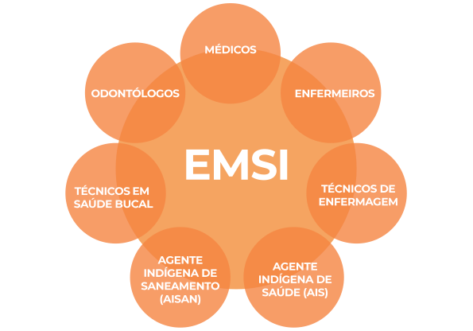
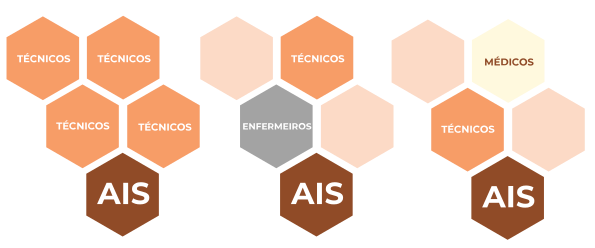
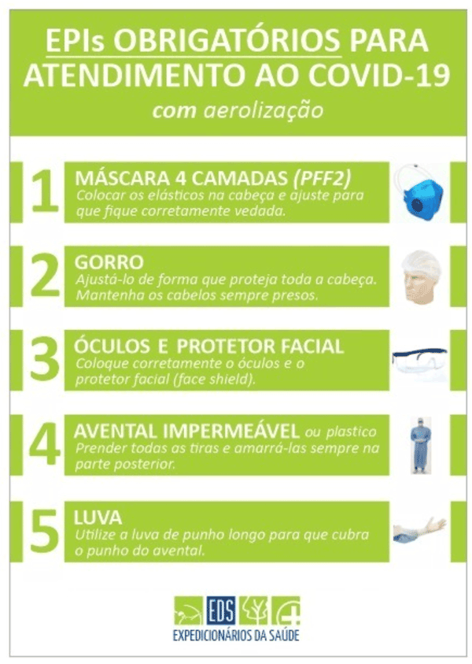
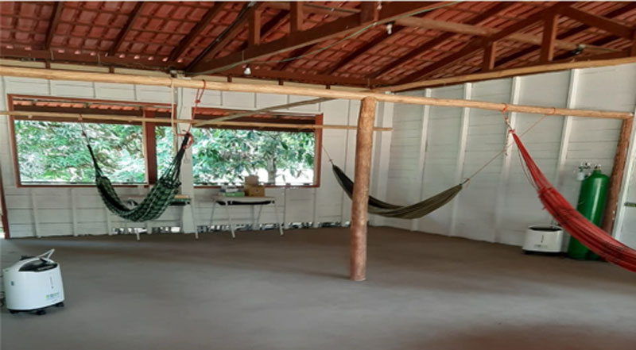

A primeira iniciativa de fomento para abertura de dados governamentais se deu a partir do Plano de Ação Nacional sobre Governo Aberto (Decreto s/nº de 15 de setembro de 2011), criado para incremento da transparência e do acesso à informação pública. As medidas estavam respaldadas na Constituição Federal, a qual estabelece que a administração pública tem a responsabilidade de fazer a gestão da documentação governamental e viabilizar o acesso dos usuários a registros administrativos e a informações sobre atos de governo.
Curso
Enfrentamento da
COVID-19
No contexto dos povos indígenas
Módulo 3 - Aula 1
Organização do trabalho da Equipe Multidisciplinar de Saúde Indígena
Nesta aula vamos falar sobre a organização do trabalho das Equipes Multidisciplinares de Saúde Indígena (EMSI) no contexto da pandemia.
Ao final, você vai ser capaz de:
- Identificar o conjunto de atribuições dos profissionais da EMSI, destacando o papel do Agente Indígena de Saúde (AIS).
- Conhecer as recomendações de uso de EPIs para profissionais de saúde no contexto indígena.
- Conhecer as recomendações para reorganização dos espaços e rotinas no posto, recepção e triagem.
- Descrever os equipamentos mínimos das EMSI.
- Conhecer as recomendações e rotinas de higienização do ambiente e insumos.
Organização da equipe: papéis e atribuições dos diferentes membros
Apesar da pandemia por Covid-19 ser um evento para o qual não dispomos de todos os conhecimentos científicos e não haver vacina ou tratamento eficaz, já se encontraram respostas eficazes para minimizar seus impactos nas populações.
Segundo Ballard et al, 2020, em todo o mundo a estruturação da resposta à doença tem se baseado em alguns pilares:
Como os profissionais de saúde são um grupo com maior risco de infecção pelo Sars-Cov-2, para sua proteção e dos usuários, deve-se reorganizar as rotinas e espaços dos serviços de saúde, estruturar protocolos, prover Equipamentos de Proteção Individual (EPIs) e insumos para desinfecção e higienização, além de qualificar os trabalhadores.
Foram registrados 786.417 casos de síndrome gripal em profissionais de saúde, 22,1% foram confirmados para Covid-19 (SVS/MS, 2020) e com 138 óbitos de SRAG causadas pela Covid-19. O Boletim Epidemiológico Especial no. 21 relativo à semana Epidemiológica 27 (28/06 a 04/07)
Organização Internacional do Trabalho também destaca a necessidade de ampliação do contingente de trabalhadores para garantir a manutenção dos serviços, particularmente diante dos afastamentos por motivos de saúde e da sobrecarga de demandas de saúde.
O Subsistema de Atenção à Saúde Indígena no âmbito do Sistema Único de Saúde (SASI-SUS), responsável pela provisão de atenção primária em territórios indígenas, representa a linha de frente do enfrentamento da Covid-19, devendo ser fortalecido para garantir a sua eficiência e eficácia.
A execução das ações de atenção primária e coordenação no acesso a outros serviços, será feita pelas Equipes Multidisciplinares de Saúde Indígena (EMSI) nos Distritos Sanitários Especiais Indígenas (DSEI) garantindo a integralidade da atenção.
Assim, a pandemia do novo coronavírus exige que as EMSI estejam completas, mas também que haja o ajuste das rotinas e atribuições para garantir a manutenção de atividades de rotina e as ações específicas da Covid-19.

Considerando as características da Covid-19, podemos dividir as atribuições da EMSI no enfrentamento da Covid-19, em quatro eixos:
-
Ações de promoção
-
Ações de prevenção
Manejo da COVID-19 - Curso
Para saber mais sobre a Covid-19, veja o curso do Campus Virtual Fiocruz: Curso Manejo da infecção causada pelo novo coronavírus Módulo 1 - Aula 2 - Transmissão, sintomas e prevenção da Covid-19
-
Vigilância em Saúde
-
Assistência Integral
A divisão das atribuições de cada membro da equipe dependerá do contexto local, mas é de fundamental importância que todos os eixos e ações sejam realizados. Em muitas situações as EMSI podem atuar de maneira desmembrada.

Por essa razão é importante que cada profissional conheça qual o seu papel, e como deve atuar nas diferentes composições da equipe.
Também é papel da EMSI, principalmente dos enfermeiros e médicos, integrar e qualificar a atuação dos AIS nas ações da equipe, reconhecendo suas potencialidades e desenvolvendo suas competências.
Atribuições específicas dos AIS
- Facilitar e intermediar a comunicação da EMSI com a comunidade.
- Realizar busca ativa de suspeitos de SG.
- Comunicar a EMSI quando identificar os casos suspeitos o mais breve possível.
- Auxiliar a triagem de casos suspeitos durante os atendimentos.
- Identificar pacientes em situação de agravamento do seu quadro clínico e que necessitem de avaliação ou remoção.
- Monitorar a chegada de pessoas na aldeia, para identificar sintomáticos e promover as orientações adequadas.
- Identificar as circunstâncias em que não é possível manter o distanciamento entre as pessoas.
- Promover, junto com os membros da EMSI, ações educativas para evitar a transmissão da doença, que sejam adequadas para a realidade local.
- Apoiar, junto com a EMSI, o monitoramento dos casos suspeitos ou confirmados leves, que se encontram em resguardo em suas moradias.
- Manter as ações de promoção, prevenção de agravos e oferta de cuidado dentro de sua competência.
- Priorizar visitas às pessoas que apresentam maior vulnerabilidade clínica social e nutricional.
- Identificar famílias ou comunidades em situação de insegurança alimentar ou com precariedade no acesso ao saneamento básico.
Para escutar
Ouça um depoimento do Médico Henrique Schlossmacher Passos sobre o envolvimento do AIS no enfrentamento da Covid-19.
Material Complementar
Veja a nota técnica SESAI para entender porque os profissionais de saúde devem entrar nas aldeias apenas para ações indispensáveis.
Para as medidas de prevenção da contaminação terem sucesso, todos os membros da equipe devem atuar de maneira integrada e atentando para seu papel individual e coletivo.
Diante do crescente registro de casos de coronavírus em muitas comunidades indígenas nos últimos meses, as EMSI devem realizar abordagem sindrômica e o manejo das SG e SRAG.
Manejo da COVID-19 - Curso
Para saber mais sobre a Covid-19, veja o curso do Campus Virtual Fiocruz: Curso Manejo da infecção causada pelo novo coronavírus Módulo 3 - Aula 1 - Detecção precoce e classificação da severidade dos pacientes com síndrome respiratória aguda grave (SRAG).
Isso deve ocorrer independentemente da confirmação do agente etiológico,uma vez que já é conhecida a vulnerabilidade dos povos indígenas às epidemias de doenças respiratórias em geral e a configuração de transmissão comunitária em todo território nacional.
Vulnerabilidade dos povos indígenas às doenças respiratórias
Para saber mais sobre o combate à Covid-19 nos povos indígenas isolados. Curso Enfrentamento da Covid no contexto dos povos indígenas Módulo 2 - Aula 1 - Epidemias e as vulnerabilidades dos povos indígenas no contexto da pandemia
No contexto da pandemia, a SESAI criou duas estratégias para ampliar a força das equipes e estruturar o enfrentamento da Covid-19 em contextos indígenas:
Equipe de resposta rápida
Em resposta a necessidade de aumentar o número de profissionais de saúde devido a chegada do coronavírus nas comunidades indígenas, foi desenvolvida a estratégia da criação das Equipes de Resposta Rápida (ERR) mediante a contratação temporária de um médico, dois enfermeiros e 4 técnicos de enfermagem.
As ERR deverão prioritariamente realizar ações relacionadas ao enfrentamento do coronavírus, podendo realizar ações de cuidado relacionadas às demais demandas no âmbito da saúde indígena.
PORTARIA Nº 55, DE 13 DE ABRIL DE 2020
Para escutar
Ouça um depoimento do Médico Henrique Schlossmacher Passos sobre a Equipe de Resposta Rápida (ERR) como auxílio na efetivação do trabalho da EMSI e, também, como instrumento de observação e análise do trabalho da EMSI.
Segurança do Trabalhador e do Usuário
A Organização Internacional do Trabalho estabeleceu como recomendações para manter os profissionais de saúde seguros, a contínua disponibilização de informações atualizadas sobre a doença e os procedimentos e rotinas de prevenção; a disponibilização regular e adequada de EPIs; a testagem ampla dos trabalhadores; e garantir os investimentos para ampliar e manter profissionais de saúde em quantidade adequada e qualificados para atuar no contexto da pandemia (BARROSO et al, 2020, p. 8-9).
No Brasil, a Nota Técnica de nº 04/2020 da ANVISA também reforça a necessidade de disseminar informações sobre normas e rotinas dos procedimentos relativos ao combate à Covid-19; a capacitação dos profissionais sobre medidas de prevenção da doença no âmbito assistencial e a necessidade de treinamento para o uso correto e seguro, acondicionamento e descarte dos EPIs e demais equipamentos de proteção.
Essa nota destaca:
“estas são orientações mínimas que devem ser seguidas por todos os serviços de saúde, no entanto, os profissionais de saúde e os serviços de saúde brasileiros podem determinar ações de prevenção e controle mais rigorosas que as definidas por este documento, baseando-se em uma avaliação caso a caso e de acordo com os recursos disponíveis”.
Consideramos que no contexto do subsistema é necessário adotar medidas preventivas mais rígidas nos serviços e na atuação com populações indígenas, particularmente nas regiões com povos isolados e de recém contato interétnico.
É prioritária a definição clara e rigorosa de rotinas e protocolos no trânsito dos profissionais de saúde e trabalhadores em territórios indígena. Sugerimos que antes do ingresso em território indígena, e com certa periodicidade de cada um dos trabalhadores, deve-se realizar o exame de RT-PCR, visando detectar portadores assintomáticos do Sars-Cov-2. Os DSEI deveriam realizar rotineiramente triagem de sintomas gripais e testagem dos trabalhadores com realização de inquéritos sorológicos amplos. Ao detectar casos confirmados de Covid-19 em trabalhadores, deve-se realizar a busca ativa de contatos nos serviços de saúde e usuários.
Consideramos que no contexto do subsistema é necessário adotar medidas preventivas mais rígidas nos serviços e na atuação com populações indígenas, particularmente nas regiões com povos isolados e de recém contato interétnico.
Para os casos de trabalhadores assintomáticos com RT-PCR positivo, o retorno ao trabalho deve ser após um período de 14 dias e com testagem negativa. Trabalhadores da saúde que apresentem sinais e sintomas que atendam a definição de SG e SRAG devem entrar em contato com a Divisão de Atenção à Saúde Indígena para providenciar sua remoção do território indígena. (Nota Técnica nº 7)
Os trabalhadores sintomáticos ou com teste molecular ou sorológico (IGM) positivos devem ser impedidos de realizar atividades presenciais ou entrada em área indígena, conforme recomendação do Informe Técnico nº 07 da SESAI.
Na ocorrência da positividade de RT-PCR ou IGM, os profissionais devem ser afastados e somente retornar ao serviços após 14 dias de isolamento, e estando sem sintomas por ao menos 3 dias, e preferencialmente com nova testagem.
Uso de EPIs pelos profissionais de saúde - Medidas de higienização: procedimentos e rotinas no trabalho
Como você já viu nesta aula, o risco biológico está presente na rotina dos trabalhadores de saúde. O SARS-CoV 2 é um vírus emergente e o impacto quanto ao risco biológico, seu padrão de transmissibilidade e infecciosidade ainda está sendo compreendido.
Os profissionais que não realizam assistência, como motoristas, cozinheiros, práticos e auxiliares de limpeza devem ser orientados e seguir as recomendações para usos de EPIs, higienização e desinfecção de ambientes e objetos, e de medidas de distanciamento social.
Os profissionais de saúde devem avaliar os riscos aos quais estão expostos para escolher o Equipamento de Proteção Individual (EPI) adequado para evitar a contaminação e realizar as medidas de adequação de fluxo para o atendimento de casos suspeitos ou confirmados de COVID-19.
É fundamental que antes e depois de cada atendimento, o profissional lave as mãos com água e sabão ou álcool gel e realize a desinfecção da superfície e materiais utilizados a cada atendimento/contato com paciente.
Como lavar corretamente as mãos
Agência Nacional de Vigilância Sanitária orienta sobre como realizar a lavagem de mão corretamente.s
Saiba mais
Leia no Portal da Anvisa sobre as orientações para serviços de saúde: medidas de prevenção e controle que devem ser adotadas durante a assistência aos casos suspeitos ou confirmados de infecção pelo novo coronavírus (sars-cov-2).
A Associação Expedicionários da Saúde (EDS) é uma organização brasileira, não política, não religiosa, sem fins lucrativos e que não recebe verbas públicas de nenhuma espécie, que foi criada em 2003 por um grupo de médicos voluntários da cidade de Campinas (SP) e que tem como objetivo levar medicina especializada, principalmente atendimento cirúrgico, às populações que vivem isoladas na Amazônia brasileira.
Em abril de 2020 a EDS deu início em abril à Missão S.O.S. Povos da Floresta, com a criação de 157 Enfermarias de Campanha (EC), denominadas UAPIs pela SESAI, em localidades estratégicas que naturalmente já servem como polos de concentração para comunidades indígenas locais, garantindo assim uma maior taxa de sobrevivência a pacientes com complicações leves e moderadas de COVID-19.
A escolha dos EPIs corretos e seu dimensionamento adequado é fundamental para a proteção das equipes e pacientes. A quantidade necessária dependerá do número de profissionais que estão atendendo, o tamanho da população assistida, sua carga horária de trabalho e quais procedimentos realizam.

Veja um exemplo de dimensionamento de EPIs utilizado pelos Expedicionários da Saúde, considerando uma equipe de 2 pessoas atendendo casos sintomáticos e confirmados por um mês.
| Aventais de proteção | 50 |
| Máscara PFF2/N95 | 20 |
| Máscara PFF1 | 100 |
| Máscara SMS/TNT | 20 |
| Envelope papel Pardo | 25 |
| Touca | 100 |
| Face-Shield | 5 |
| Óculos de Proteção | 5 |
| Luva nitrílica CX com 100 | 2 |
| Álcool Gel 500ML | 4 |
| Capa de chuva estádio | 10 |
Além do dimensionamento, é importante que toda a equipe tenha treinamento para o uso adequado destes equipamentos.
Vídeo
Agência Nacional de Vigilância Sanitária orienta sobre como realizar a lavagem de mão corretamente.Fonte:EDS
Vídeo
Vídeo: Guia de procedimentos: EPI para paciente SEM produção de aerosso. Fonte:EDS
Realizar a desparamentação da forma correta é fundamental.
Como lavar corretamente as mãos
Vídeo: Guia de procedimentos: desparamentação - Fonte:EDS
Sintomáticos X Assintomáticos
Conheça agora os EPIs necessários para atendimento de pacientes sintomáticos e assintomáticos.
Protegendo os profissionais de saude
Para saber mais sobre a Covid-19, veja o curso do Campus Virtual Fiocruz:
Orientações sobre como guardar sua máscara N95 com segurança
A diretora da Comissão de Assistência da SOBECC, Simone Garcia Lopes, compartilha uma dica super legal e prática de como guardar a sua máscara com segurança.
Dê play e confira! Pela sobrevivência das línguas indígenas
Fonte: YouTube
Saiba mais
Leia sobre a utilização das máscaras N95 na nota informativa do Ministério da Saúde:
Ambiência
Diante das características da transmissão do Sars-Cov-2, outro conjunto importante de medidas a serem tomadas nos serviços de saúde indígena se referem a adequação dos espaços, circulação, rotinas de trabalho e rodízios das equipes de saúde. Essas medidas devem ser aplicadas para evitar aglomerações e minimizar riscos de transmissão do Sars-Cov-2 no atendimento das demandas gerais de saúde da população e para a assistência adequada e integral dos casos suspeitos e confirmados da Covid-19.
Ressaltamos que o subsistema de saúde indígena possui diferentes espaços que precisam ser considerados (Pnaspi, 2012) no planejamento e execução das medidas: a) Comunitário ou aldeia; b) Polo Base; c) Sede; d) CASAI.
Atenção
Medidas simples podem auxiliar na prevenção do contágio:
- Realizar triagem de pacientes em local aberto, bem ventilado, identificando e separando pacientes sintomáticos ou suspeitos (contato de casos suspeitos ou confirmados).
- Utilização de espaços e equipes distintas para o atendimento de casos sintomáticos ou suspeitos de Covid-19.
- so correto dos EPIs por toda equipe.
- Higienização do ambiente e insumos.
Para enfrentamento da COVID-19, a SESAI criou as Unidades de Atenção Primária à Saúde Indígena (UAPI). Um dos pontos fundamentais é a organização do local onde será realizado o atendimento.
Recepção e triagem dos pacientes
A EMSI deve atuar de forma integrada, com o apoio de todos os profissionais e das lideranças locais, buscando facilitar o fluxo de pessoas, das informações e decisões.
A triagem pode ser realizada pelo AIS ou técnico de enfermagem e consiste em fazer algumas perguntas, de preferência na língua falada pela pessoa.
PERGUNTAS
Perguntas
- Está com tosse?
- Dor no corpo?
- Dor de cabeça?
- Dor de garganta?
- Falta de ar? Ou cansaço?
- Ou febre?
- Tem alteração no olfato ou paladar?v
- Acha que está com gripe?
Caso a pessoa responda sim para uma pergunta ela é suspeita de síndrome gripal e deve ser atendida em um local separado dos outros pacientes, e usar máscara cirúrgica. Além disso, pacientes que são contato de casos suspeitos ou confirmados também devem ser separados dos demais pacientes no momento do atendimento, e usar máscara cirúrgica.
Equipamentos mínimos
EQUIPAMENTOS BÁSICOS PARA ATUAÇÃO DAS EMSIs
Equipamentos básicos para atuação das EMSI
- estetoscópio
- esfigmomanômetro (para obesos, adultos e pediátricos)
- termômetro
- lanterna
- otoscópio
- oxímetro de pulso (adultos e pediátrico)
- máscaras para oxigenoterapia
- equipos para medicação endovenosa e intramuscular
- álcool 70 para limpeza de equipamentos e superfície
- álcool gel 70 para higienização das mãos nos locais onde não é possível o acesso rápido à água
- sabonete líquido
Unidades de atenção primária indígena
Como você já viu anteriormente, a SESAI está implementando uma nova estratégia para fortalecimento da atenção primária no contexto da pandemia.
UNIDADES DE ATENÇÃO PRIMÁRIA INDÍGENA
Em resposta ao crescente número de casos a SESAI desenvolveu uma estratégia temporária de assistência denominada Unidades de Atenção Primária Indígena (UAPI). O objetivo é oferecer atendimento resolutivo com suporte respiratório (oxigênio) para os casos leves, evitando encaminhamentos desnecessários para rede hospitalar, respeitando a especificidade cultural de cada etnia e otimizando os recursos disponíveis. A equipe deve ser formada por membros da EMSI e/ ou das Equipes de Resposta Rápida (ver abaixo) contando com no mínimo um médico, um enfermeiro e um técnico de enfermagem.
OFÍCIO CIRCULAR No 37/2020/DASI/SESAI/ de 27 de maio de 2020.
As Unidades de Atenção Primária Indígena (UAPI), que devem conter minimamente:
- Concentradores de oxigênio com geradores caso não haja energia elétrica no Polo/Posto/Aldeia.c
- Cateteres nasais de adulto e criança.
- Cilindro reserva de oxigênio e cilindro para transporte de pacientes.
- Oxímetros adulto e de criança.
- Termômetro infravermelho.
- EPIs em qualidade e quantidade suficiente para profissionais e pacientes.
- Medicamentos e insumos para monitoramento de pacientes internados (sintomáticos, corticoides, soro, equipo, etc.).
- Redário ou macas para pacientes e acompanhantes, garantindo a distância mínima entre os leitos.
- Local para lavagem de mãos ou dispenser com álcool.
- Banheiros ou locais para despejo de fezes/urina.
- Pontos de iluminação adequados.
- Expurgo e depósito para material de limpeza.
- Sistema de comunicação com a rede de referência (internet, telefone, rádio).
- Transporte para casos graves.
É de fundamental importância que as UAPIs sejam instaladas em local com ventilação adequada, local para lavagem de mãos ou dispenser com álcool e que seja garantido o distanciamento mínimo entre os pacientes.
De acordo com a Nota Técnica NOTA TÉCNICA Nº 69/2020/SEI/GRECS/GGTES/DIRE1/ANVISA, Anexo 1 Unidades Alternativas de Assistência à Saúde – Recomendações, deve ser mantida uma distância de 1,0 m entre leitos, 1,0 m entre laterais do leito e parede, 1,5 m ao pé do leito para circulação de pelo menos 1,5 m.
Banheiros ou locais utilizados pelos pacientes para urinar e defecar devem ter uma atenção especial, é necessário que eles sejam isolados, uma vez que é sabida a transmissão da Covid-19 pelas fezes e urina. Um local específico deve ser designado para a dispensação adequada de resíduos sólidos e armazenamento de materiais de limpeza.
Deve-se garantir um local para a permanência de acompanhantes. Todas as pessoas que estiverem nas UAPIs, sejam pacientes, acompanhantes ou membros da equipe de saúde, devem utilizar máscaras permanentemente e higienizar as mãos regularmente.
Outro ponto a ser destacado é a implementação de medidas que garantam a segurança do paciente nas UAPIs, que podem ser baseadas na NOTA TÉCNICA GVIMS/GGTES/ANVISA Nº 08/2020 ORIENTAÇÕES GERAIS PARA IMPLANTAÇÃO DAS PRÁTICAS DE SEGURANÇA DO PACIENTE EM HOSPITAIS DE CAMPANHA E NAS DEMAIS ESTRUTURAS PROVISÓRIAS PARA ATENDIMENTO AOS PACIENTES DURANTE A PANDEMIA DE COVID-19.
Atenção
Considerando as características da Saúde Indígena, destacam-se as seguintes medidas:
- Identificação correta do paciente.
- Prevenção de Queda do Paciente.
- Prevenção de Lesão por Pressão.
- Práticas seguras para prevenção de erros na administração de medicamentos.
- Medidas de prevenção e controle de infecções relacionadas à assistência à saúde.
AS UAPIs também devem estar conectadas à rede de referência, sendo necessário para isso a garantia de sistema de comunicação (internet, telefone, rádio, etc.) e transporte de pacientes.
Em muitos locais, não será possível garantir a estruturação de uma UAPI nos equipamentos de saúde, sendo necessária a utilização de estrutura de escolas, casas comunitárias, postos da Funai, entre outros.
Os equipamentos que compõem as UAPIs também devem ser dimensionados de acordo com o número de pessoas da região a ser atendida e distância de unidades de referência. Os EDS têm utilizado como referência 1 concentrador de O2 para 500 pessoas em regiões isoladas e 1 para 750 pessoas em regiões mais próximas de centros de referência.

UAPI polo Base Aramirã, TIW
Veja como utilizar o Concentrador de O2 corretamente.
Vídeo
Guia de procedimentos: Concentrador de O2
Fonte:EDS
Organização das CASAI
Cada CASAI deve se organizar conforme a realidade local e o espaço disponível, sempre buscando medidas para evitar a transmissão do vírus, para isso é necessário:
A adequação dos espaços deve ser feita a partir das características da realidade local e em diálogo com os indígenas, para que as medidas que restringem a circulação de pessoas e acompanhantes não sejam interpretadas de maneira equivocada.
Além disso, as medidas de higiene podem parecer inadequadas e gerar estranhamento diante de hábitos culturais distintos. Nesse contexto, ressaltamos a importância da presença de intérpretes e profissionais de ambos os sexos para facilitar a comunicação.
Quando houver pacientes de grupos de recente contato hospedados na CASAI, a Equipe da CASAI deve fazer um acolhimento diferenciado e adequado. E, no contexto da pandemia, implementar rigorosamente as medidas sanitárias e preventivas no acompanhamento desses grupos.
Mas eis a pergunta que realmente
interessa:
esta quantidade de artigos é igualmente traduzida em qualidade, influencia,
relevância?
Saiba mais
Leia no Boletim de Notícias ConJur o artigo Barroso manda governo complementar plano contra Covid em índios
Combate à Covid-19 nos povos indígenas isolados
Para saber mais sobre o combate à Covid-19 nos povos indígenas isolados.
Garantia da integralidade da atenção à covid-19
O reconhecimento das especificidades dos povos indígenas pelo Estado brasileiro permitiu a criação do SASI-SUS. Entretanto, diferentemente do restante da rede SUS em que se priorizou a execução das ações de atenção primária pelos municípios, a gestão dos DSE é federal. Por isso a Lei 9.836/99 preconiza que:
§ 2o O SUS servirá de retaguarda e referência ao Subsistema de Atenção à Saúde Indígena, devendo, para isso, ocorrer adaptações na estrutura e organização do SUS nas regiões onde residem as populações indígenas, para propiciar essa integração e o atendimento necessário em todos os níveis, sem discriminações.
§ 3o As populações indígenas devem ter acesso garantido ao SUS, em âmbito local, regional e de centros especializados, de acordo com suas necessidades, compreendendo a atenção primária, secundária e terciária à saúde”.
Assim, a garantia da integralidade das ações de saúde exige medidas adicionais de interação e pactuação entre os níveis federal (representado pela SESAI), estadual e municipal de gestão em saúde. Pois, o conjunto de ações necessárias para atendimento ao combate efetivo ao novo coronavírus e suas implicações na saúde humana, em particular para os casos graves e sequelas, exigem atendimento pré-hospitalar, acesso a exames ou terapias especializadas como internação em UTI e uso de respiradores, recursos não disponíveis rotineiramente nos Distritos Sanitários Especiais Indígenas. Tal necessidade de articulação e pactuação é anterior à irrupção da epidemia, porém a ocorrência dela ressaltou as fragilidades crônicas do subsistema de saúde indígena, que desde sua criação interage de modo insuficiente com outras instâncias do SUS.
Para escutar
Ouça um podcast sobre a Articulação do Subsistema de Saúde Indígena com Estados e Municípios no Enfrentamento ao Coronavírus
Como as EEMSI devem se organizar em relação à manutenção da assistência durante a pandemia do coronavírus
As EMSI devem manter as demais ações de atenção primária, estando atenta para os demais agravos dos indivíduos.
-
Pré-natal , saúde da criança e outras condições de saúde
Continuidade do cuidado de pré-natal e saúde da criança, além do cuidado programático de outras condições de saúde, como hipertensão, diabetes, tuberculose, etc.
-
Atendimento odontológico
Os atendimentos odontológicos devem ser suspensos, exceto os atendimentos das urgências odontológicas, conforme a Nota Técnica No 9/ 2020-CGSB/DESF/SAPS/MS de 20/03/2020.
-
Imunização
As ações referentes à imunização das comunidades indígenas devem ser mantidas, principalmente a vacinação para influenza vírus, considerando o impacto desta doença nas populações indígenas. As EMSI devem buscar medidas que diminuam os riscos de contaminação durante a vacinação, como por exemplo:
Material Complementar
Veja o material elaborado pela equipe de enfermagem do ProjetoXingu/UNIFESP sobre as medidas a serem adotadas pelos serviços de saúde indígena para a prevenção da infecção pelo novo coronavírus durante o acolhimento para campanha de vacinação.
Material Complementar
Veja as recomendações aos profissionais de enfermagem e equipes de saúde quanto aos procedimentos necessários no enfrentamento da Covid 19.
Chegamos ao final da aula
Chegamos ao final da aula.
Nela, você viu: o conjunto de atribuições dos profissionais da EMSI, destacando o papel do Agente Indígena de Saúde (AIS); as recomendações de uso de EPIs para profissionais de saúde no contexto indígena e as recomendações para reorganização dos espaços e rotinas no posto, recepção e triagem; quis são os equipamentos mínimos das EMSI e as recomendações e rotinas de higienização do ambiente e insumos.
Na próxima aula, você vai ver sobre a Educação e comunicação em saúde na prevenção para Covid-19 no contexto indígena.
Siga em frente!